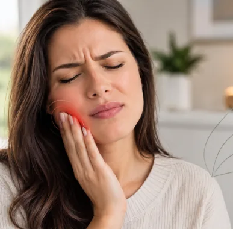
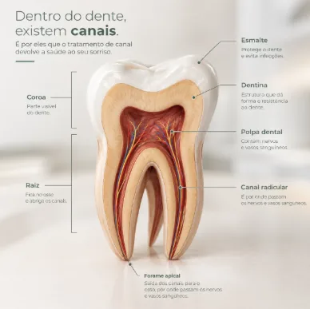
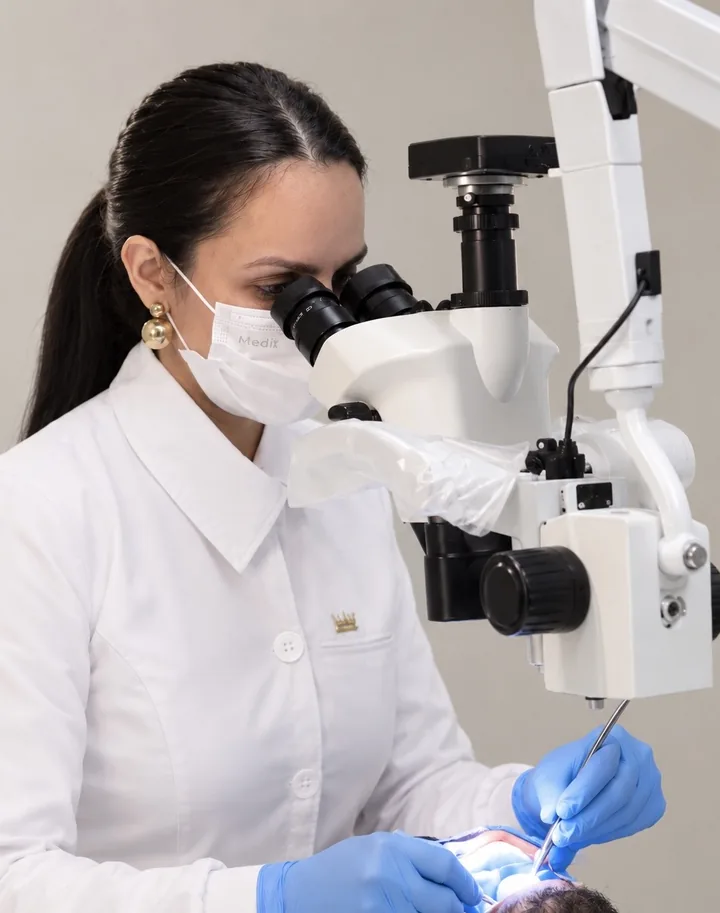

Tratamento de canal
O que é tratamento de canal?
O tratamento de canal, também conhecido como tratamento endodôntico, é um procedimento odontológico que ajuda a salvar dentes comprometidos por cáries profundas, traumas ou infecções.
Ele consiste na remoção da polpa dentária, o tecido localizado na parte interna do dente, seguida da limpeza, desinfecção e vedação dos canais. O objetivo é eliminar a infecção, aliviar os sintomas e preservar o dente natural, evitando sua extração quando possível.

Quando o tratamento de canal é necessário?
Pode ser indicado quando a polpa do dente está inflamada de forma irreversível, infectada ou necrosada. Dor intensa, sensibilidade prolongada ao frio ou ao calor e inchaço podem ser sinais de alerta, mas a avaliação odontológica é fundamental para determinar a necessidade do tratamento.
Com o diagnóstico correto e o tratamento adequado, é possível preservar o dente e recuperar sua função mastigatória.

Dra Morgane Marion
Dra. Morgane Marion: Especialista em Endodontia, com mestrado e doutorado pela UFSC. Coautora de diversos artigos científicos e relatos de experiência nas áreas de saúde bucal, disfunção temporomandibular e sistemas endodônticos, aliando conhecimento científico, experiência clínica e dedicação à excelência no tratamento odontológico.

Referências científicas e institucionais
- Associação Americana de Endodontistas (AAE) — informações sobre o tratamento de canal, suas etapas e a preservação do dente natural.
Root Canal Treatment – AAE - Ministério da Saúde — informações sobre a oferta de tratamento endodôntico no atendimento odontológico especializado.
Ministério da Saúde – Saúde Bucal - Secretaria de Estado de Saúde do Distrito Federal — protocolo clínico de endodontia, com indicações e orientações sobre o tratamento.
Protocolo de Atenção à Saúde – Endodontia